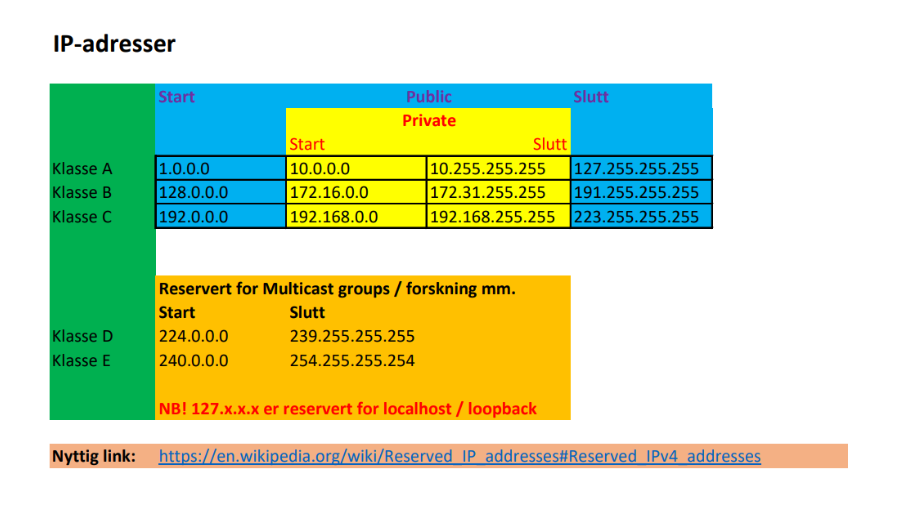

Opplæring: IP-adresser og subnettmasker
Hva er en IP-adresse?
En IP-adresse identifiserer en enhet i et nettverk, som en PC eller mobil. IPv4 består av fire tall (0–255).
Eksempel: 192.168.1.10
Hva består en IP-adresse av?
- Nettverksdelen – viser hvilket nettverk enheten er i.
- Enhetsdelen – viser selve enheten.
IP-klasser (A–E)
IP-adresser deles i klasser A–C (vanlig bruk), og D–E for spesielle formål. Se tabellen for detaljer.

IP-kalkulator: https://www.calculator.net/ip-subnet-calculator.html
Hva er en subnettmaske?
Subnettmasken viser hvilke deler av IP-adressen som er nettverk og hvilke som er enhet.
Vanlig maske: 255.255.255.0 – de tre første tallene er nettverket, siste er enheten.
Subnett i binær
Masken er egentlig et mønster med 1 og 0. 1 = nettverk, 0 = enhet. IPv4 har 4 oktetter med 8 biter hver.
Eksempel:
IP: 192.168.1.10
Mask: 255.255.255.0
Mask i binær: 11111111.11111111.11111111.00000000Eksempel på subnett
Liten kontor med 30 enheter. Velg /27 (255.255.255.224) – 32 adresser totalt, 30 brukbare.
Eksempelnettverk: 192.168.10.0/27
- Network:
192.168.10.0 - Første IP:
192.168.10.1 - Siste IP:
192.168.10.30 - Broadcast:
192.168.10.31
Eksempel
IP-adresse: 192.168.1.10
Subnettmaske: 255.255.255.0
→ Nettverksdel: 192.168.1
→ Enhetsdel: 10
Hvordan jobber de sammen?
IP-adresse og subnettmaske avgjør om to enheter er i samme nettverk. Hvis nettverksdelen er lik, kan de kommunisere direkte. Ellers må trafikken via ruter.
Kort oppsummert
- IP-adresse identifiserer en enhet.
- Subnettmasken viser nettverk og enhet.
- Samme nettverksdel → direkte kommunikasjon.
- Ellers går trafikken via ruter.